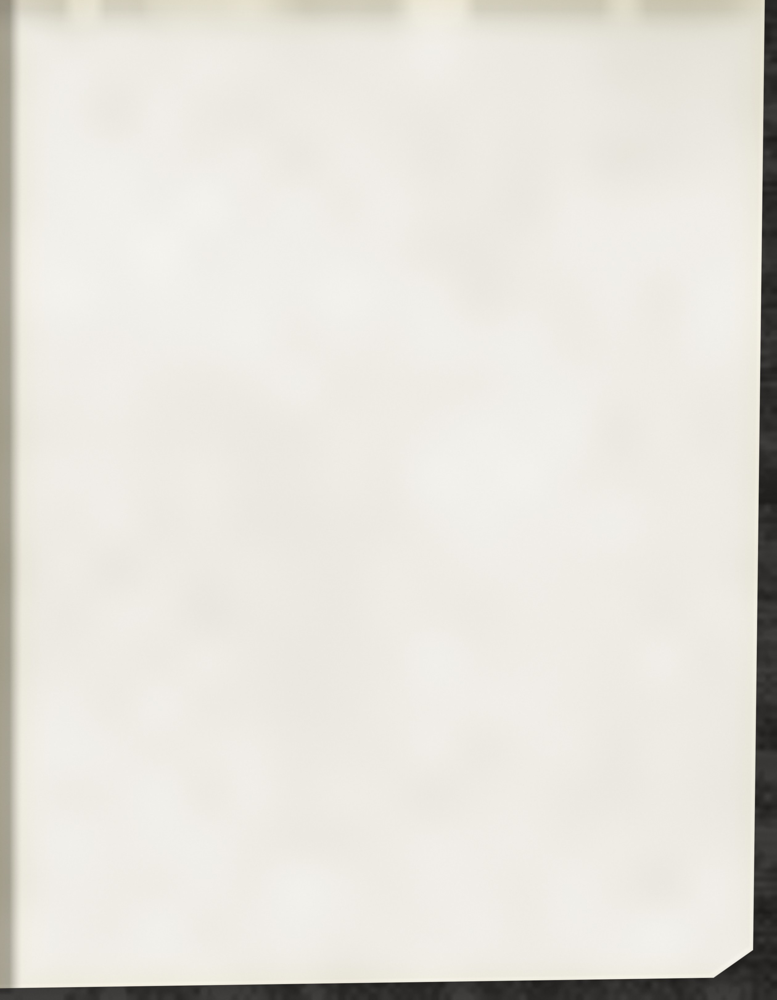
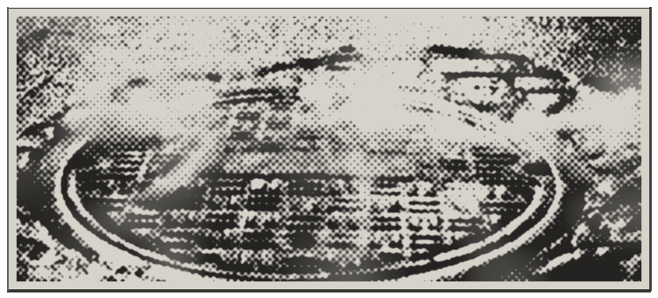
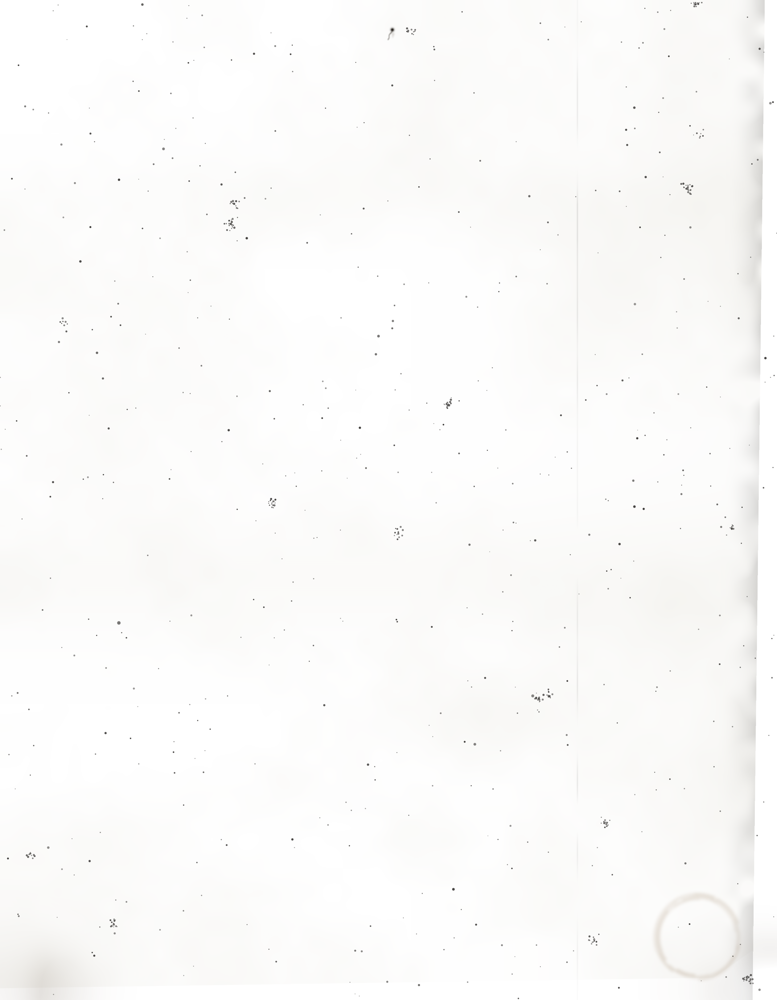

Soup kitchen, open to anybody who is hungry.
Run by A.J. Shepherd. Ask for the Reverend.
has had firsts.
BEEF STEW
Chuck braised for hours with carrot, celery, onion and potato. Italian bread to mop it up.
CHEDDAR AND ONION ROLLS
A pull-apart pan, baked this morning with sharp cheese on top. Good for dunking.
MANHOLE COVER PIZZAS
Little rounds of tomato sauce and mozzarella, pepperoni laid on in a crosshatch.
CIDER DOUGHNUTS
Cake rings made with apple juice boiled down thick, fried and rolled in cinnamon sugar.
LIME COOLER
Sweetened lime juice and tonic water, poured over a glass full of ice.
COFFEE
Black, all day. Milk and sugar on the counter. 25 cents in the jar if you can spare it.

THE TUNNELS
It is no place to sleep. If you need somewhere warm tonight, come and ask.
EVERYBODY?
Some of our regulars from down below have not come up for a meal in weeks. If you have seen them, or know where they went, please tell me. Captain Bosch at the precinct is asking too.
God bless.

again. Call him back!